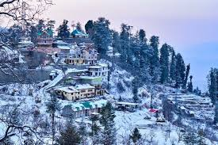

About:
A Place Of Wonder

The Kalka–Shimla Railway line is popular for tourists visiting Shimla. Kalka is just 2.5 hours from Shimla, and Chandigarh is 3 hours and 15 minutes. On the other hand, Delhi and Manali are 7 hours away from Shimla. The road is well connected via NH 5, near Chandigarh.
The city has Jakhoo in its northernmost point and Anndale in its southern part. It has Sanjauli in its eastern part and Chotta Shimla in the western region. The city is located in the south-western ranges of the Himalayas and is at 31.61°N 77.10°E, with an elevation of 2,206 metres. The city has a 9.2 kilometres stretch from east to west.
More Text
Things to do in shimla
Explore the historic Viceregal Lodge
Take a leisurely stroll along the Mall Road
Visit Jakhoo Temple for panoramic views
Shimla
HIMACHAL PRADESH,INDIA
Culture and Traditions
Nestled in the Himalayas, Shimla offers a captivating blend of colonial history and natural beauty. The Mall Road bustles with shops and eateries, while the Viceregal Lodge showcases historical grandeur.
Discover Shimla
The capital city of Himachal Pradesh, Shimla is home to a variety of temples and churches, and its gravity defying Kalka-Shimla railway which has earned UNESCO World Heritage Site status. Shimla also offers amazing views of the Himalayas and the largest natural ice skating rink in South Asia.
Located in the foothills of the Himalayas over 2,000 metres above sea level, Shimla offers spectacular views and a comfortable cool climate. The British Raj made the area their summer retreat from the 1860s onwards, with the British administration accompanied by families and servants, making the journey every summer to escape the heat. It was during this time in 1903 that the Kalka to Shimla narrow gauge railway was opened. Affectionately known as the Toy Train, the train ride to Shimla is a major draw offering views of the stunning scenery.
Places to see in Shimla
include Ridge, Mall Road, Kufri, Toy Train from Kalka to Shimla, Jakhoo Temple, Theog, Scandal Point, Institute of Advanced Studies, Mashobra, Chail, Christ Church, Tattapani, Lakkar Bazaar, Himalayan Bird Park and Naldhera. The best time to visit in from April to September, although it’s a year-round destination.
You can also enjoy many adventure activities such as River Water Rafting, Camping, Paragliding, Mountain Biking, Skiing, Golfing, Ice Skating among other things.
Bear in mind that Shimla is a popular weekend getaway for people in North India, so if you plan to visit on any such weekend break, make sure you make all your reservations in advance. Train booking opens three months in advance, and if you are driving them to make sure you leave early morning, so you can avoid traffic along the way. Keep tabs on the weather and have a backup in case of delays or cancellations.